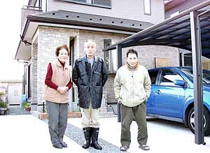

中村かあちゃんの"炭鉱の記憶"（聞き取り年月日場所：2005年12月26日 滋賀県甲賀市水口町 中村さん自宅）  炭鉱労働者だった滋賀県甲賀市水口町在住の中村茂歳さんの奥さんにもまた言うに言われぬ炭鉱の記憶 があった。昭和14年、奥さんは熊本県荒尾市に生まれた。 奥さんのお父さんは三井三池炭鉱三川鉱で働いていた。ある時坑内で昼食を取っていたとき落盤で亡くなった。落下してきた 坑木が首のあたりに落ちてきて即死であったという。42歳だった。奥さんはその時まだ小学6年生だった。亡くなった父親 の代わりに3つ上の兄が三井三池炭鉱三川鉱に入った。そしてお母さんもまた一生懸命に働き子どもを育てた。 中村かあちゃんの実兄は松田猛さんと言い、中学を卒業すると三井鉱山学校へ入学。その頃の三井鉱山学校は人気も高く、狭き 門だった。鉱山学校を卒業すると三池労組へ入った。そして三池闘争を闘ってきた。
が、しかし、昭和38年11月10日の三川鉱炭じん大爆発事故の後、「命までかけて炭鉱で働かんでもよか」と言って炭鉱をやめた。 その兄・松田猛さんも今年5月がんにより69歳で亡くなった。そのせいなのだろう、「私は100歳まで生きる」と、中村かあちゃん は力強く天に向かって宣言した。「炭鉱はよそに比べて収入はよかったが、退職金は微々たるものだった。自分の家を持つんだとい う一心で一生懸命働いたよ」と中村かあちゃんは語る。炭鉱の母ちゃんたちもまた、たくましい。
|